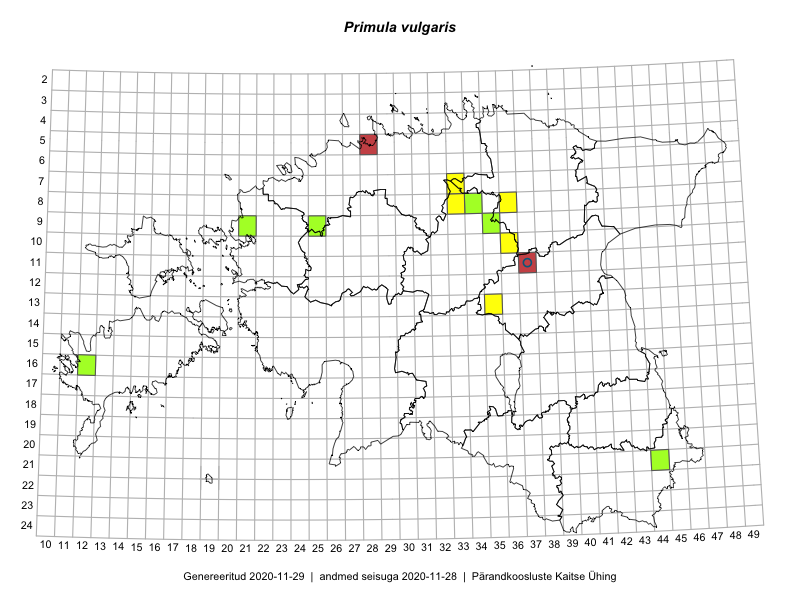

Primula vulgaris
Uuendatud: 2016-12-02
Kaardile koondatud taksonid: Primula vulgaris Huds.

Kaart põhineb 9 kirjel, neist vaatlusi 7 ja eksemplare 2. Taksonit on leitud 7 ruudust.
Viited andmebaasikirjetele
- Jana-Maria Habicht, Ester Valdvee: 2015-05-09: 08-33: GPS punkt
- Jana-Maria Habicht, Ester Valdvee: 2015-05-10: 07-33: GPS punkt
- Toivo Sepp, Eerik Leibak: 2015-05-11: 10-36: ala
- Toivo Sepp, Eerik Leibak: 2015-05-12: 10-36: GPS punkt
- Toivo Sepp, Eerik Leibak: 2015-05-12: 10-36: GPS punkt
- Toivo Sepp, Eerik Leibak: 2015-05-12: 08-36: GPS punkt
- Ott Luuk, Liina Oja: 2015-05-11: 13-35: GPS punkt
- Jana-Maria Habicht: 2015-05-09: 08-34: GPS punkt
- Ester Valdvee: 2015-04-21: 09-35: GPS punkt